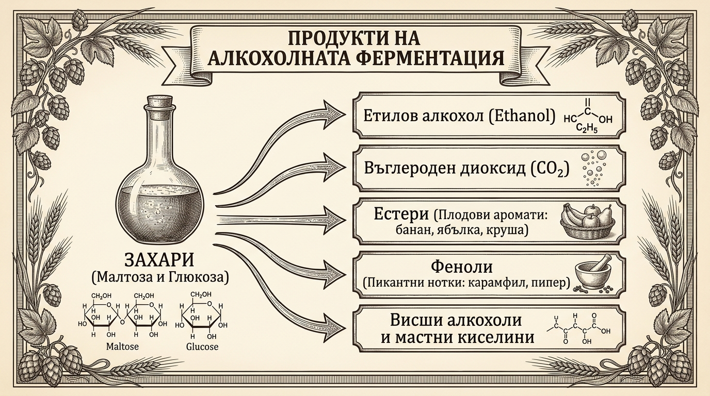
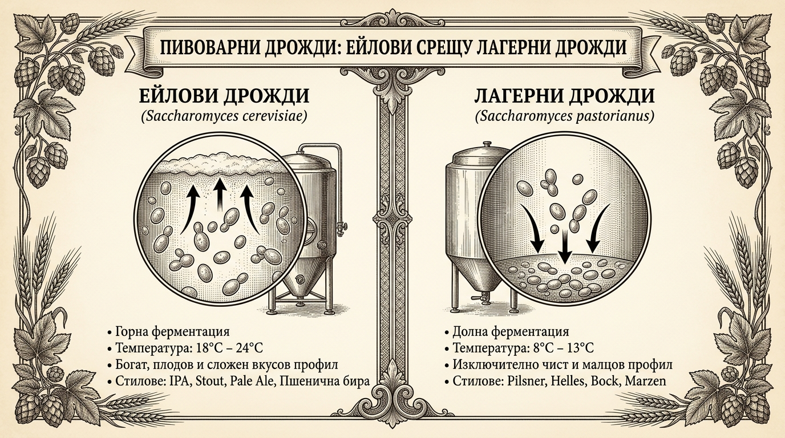
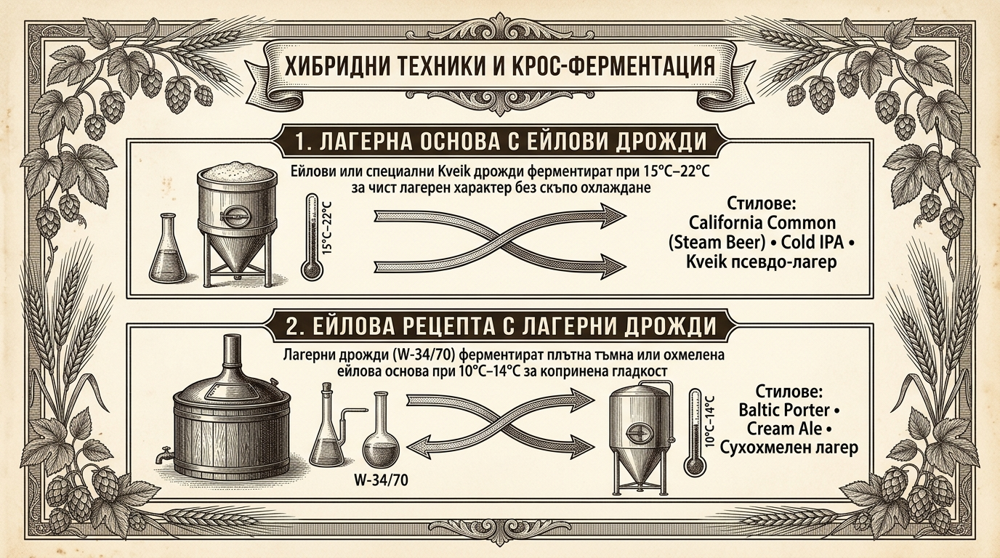
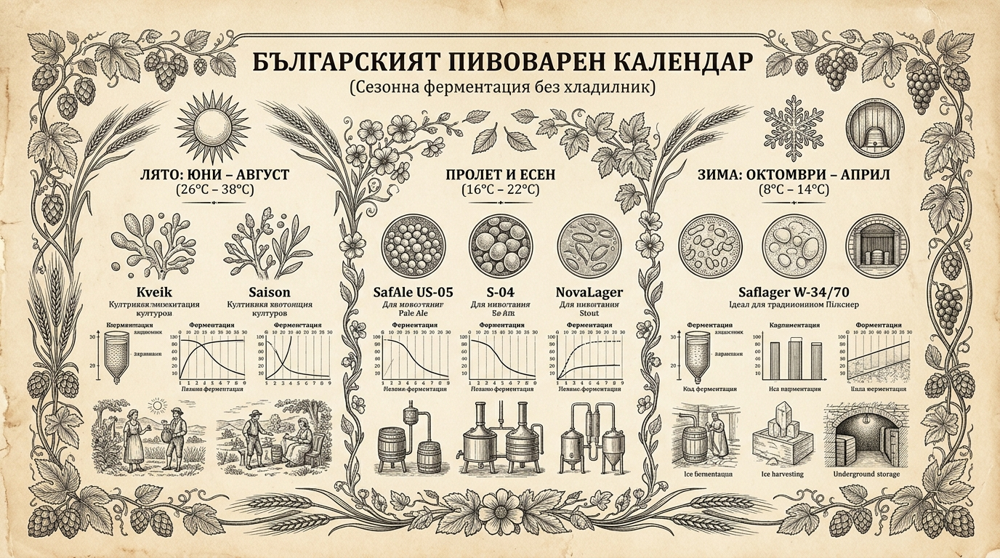

Магията на дрождите: Невидимите майстори на ферментацията
В пивоварството съществува основополагащо разбиране за разпределението на технологичните роли: пивоварят внимателно подготвя хранителната среда от малц, вода и хмел, но същинското тайнство по превръщането на сладката мъст в бира се извършва изцяло от биологичната активност на пивоварните дрожди. Без тези микроскопични едноклетъчни организми приготвената течност би останала просто сладък зърнен чай, уязвим за нежелани диви бактерии.
Пивоварните дрожди са специализирани едноклетъчни гъбички, които чрез анаеробна алкохолна ферментация преобразуват малцовите захари в етилов алкохол и въглероден диоксид (CO2). Заедно с това те синтезират стотици вторични метаболитни продукти — естери, феноли, висши алкохоли и органични киселини, които оформят уникалния ароматен профил, текстура и вкусово тяло на всеки класически и модерен бирен стил.
5.1. Как дрождите оформят вкуса и стила на бирата?
Много начинаещи пивовари отдават вкуса на бирата предимно на малцовете или на екзотичните хмелове, но дрождите са истинският архитект на нейния характер. Докато етанолът и въглеродният диоксид съставляват над 99% от количествения резултат на ферментацията, останалият под 1% от вторични съединения притежава изключителна сензорна сила:
-
Естери (Esters):
Химични съединения, получени при свързването на алкохоли и органични киселини по време на активната ферментация. Те отговарят за плодовите нотки в бирата. При по-висока температура дрождите отделят значително повече естери. Класически пример е изоамилацетатът (isoamyl acetate), който придава характерния наситен аромат на зрял банан в баварския вайсбир (Hefeweizen), както и етилхексаноатът, внасящ нотки на червена ябълка и круша в белгийските ейлове.
-
Феноли (Phenols):
Ароматни съединения, които внасят пикантни, карамфилови, пиперливи или фини опушени нюанси. Докато при стандартните лагери фенолите се считат за дефект, при баварската пшенична бира съединението 4-винилгваякол (4-VG) създава търсения карамфилов профил, а специфичните щамове за белгийски сайзони и трапистки ейлове разгръщат многопластова комплексност от черен пипер и билки.
-
Диацетил (Diacetyl):
Естествен междинен продукт на метаболизма, който се проявява с наситен вкус и аромат на разтопено краве масло, маслени пуканки или карамелен ирис. В края на ферментацията здравите дрожди абсорбират и редуцират отделения диацетил до безвкусното съединение бутандиол. Докато съвсем фини следи са допустими в някои английски традиционни ейлове, при пилзнерите и лагерите диацетилът е тежък дефект, показващ преждевременно прекъсната ферментация или недостиг на дрождена маса.
-
Затихване / Атенюация (Attenuation):
Процентът ферментируеми захари от първоначалния екстракт, които съответният щам успява да разгради и метаболизира. Щамове с висока атенюация (78%–85%) произвеждат сухо пиво с олекотено тяло и освежаващ финал (характерно за сухохмелени IPA и Saison). По-ниската атенюация (68%–72%) оставя част от захарите неразградени, придавайки плътно, закръглено и подчертано малцово тяло (характерно за сладки стаути и класически британски ейлове).
-
Флокулация (Flocculation):
Генетичната способност на дрождените клетки да се слепват в плътни агрегати и да се утаяват на дъното на съда след изчерпване на хранителната среда. Високофлокулиращите щамове формират плътен утайков слой и оставят бирата кристално бистра без допълнителна филтрация. Нискофлокулиращите щамове остават суспендирани в обема по-дълго време, създавайки характерната мъглявина при пшеничните бири и сочните стилове (New England IPA).

5.2. Двата основни класа: Ейлови срещу Лагерни дрожди
Всички култивирани пивоварни щамове принадлежат към рода Saccharomyces, но се делят на два основни вида, различаващи се коренно по своята клетъчна физиология, температура на размножаване и биохимично поведение:
1. Ейлови дрожди (Saccharomyces cerevisiae)
Историческият класически вид, познат на пивоварите и пекарите от хилядолетия. Наричат се още дрожди с горна ферментация (top-fermenting). Клетъчните им стени притежават хидрофобни свойства, поради което по време на бурната фаза мехурчетата въглероден диоксид ги изтласкват нагоре и образуват дебел, кремообразен слой пяна (краузен) върху повърхността на ферментатора.
Ейловите дрожди функционират оптимално при умерени температури от 18°C до 24°C. В този диапазон те работят изключително динамично (затихвайки за 4 до 7 дни) и генерират пъстър спектър от естери и вторични аромати, които са емблематични за Pale Ale, IPA, Stout, Porter и белгийските стилове.
2. Лагерни дрожди (Saccharomyces pastorianus)
Генетично лагерните дрожди са естествен студоустойчив междувидов хибрид между класическите ейлови дрожди (S. cerevisiae) и дивия южноамерикански/европейски щам Saccharomyces eubayanus. Наричат се дрожди с долна ферментация (bottom-fermenting), тъй като по време на процеса клетките остават диспергирани в обема и при затихване се слягат на дъното на коничния съд.
Лагерните дрожди са способни да разграждат специфични захари като мелибиоза и работят при значително по-ниски температури — от 8°C до 13°C. Ферментацията протича бавно (10 до 21 дни), а метаболизмът им е насочен към максимална вкусова чистота. Те не образуват забележими плодови естери, оставяйки малца и благородния европейски хмел да изпъкнат с кристална чистота, характерна за немските и чешките пилзнери, хелс и бок бири.

5.3. Гранични работни температури на популярни щамове
Всяко сухо или течно пакетче дрожди има точно дефиниран работен температурен прозорец. Важно е домашният пивовар да помни, че активната ферментация е силно екзотермична реакция — разграждането на захарите генерира топлина, която повишава вътрешната температура на течността с 1°C до 3°C над околната температура на стаята.
В долната таблица са обобщени най-разпространените и достъпни сухи пивоварни щамове на пазара, техните работни диапазони и вкусови характеристики:
| Класификация | Марка и Щам | Оптимален диапазон | Гранични температури | Вкусов профил и Ефект |
|---|---|---|---|---|
| Класически Ейл | Fermentis SafAle US-05 | 18°C – 24°C | 12°C – 28°C | Абсолютно неутрален и чист американски профил; подчертава хмеловия аромат и горчивина. |
| Английски Ейл | Fermentis SafAle S-04 | 15°C – 20°C | 12°C – 25°C | Бърза ферментация и висока флокулация; придава леки плодови естери и мека малцова закръгленост. |
| Пшеничен Ейл | SafAle WB-06 / LalBrew Munich | 18°C – 24°C | 12°C – 26°C | Изразени нотки на банан и карамфил; по-топлата ферментация (22°C–24°C) акцентира върху банана. |
| Традиционен Лагер | Fermentis Saflager W-34/70 | 10°C – 14°C | 9°C – 15°C (до 18°C под налягане) | Световният златен еталон за немски и чешки пилзнер; кристално чист, малцов и освежаващ профил. |
| Класически Лагер | Fermentis Saflager S-23 | 10°C – 14°C | 9°C – 15°C | Дава свеж, суховат и деликатно плодов лагерен профил при стриктно студена ферментация. |
| Норвежки Kveik | Lallemand Voss Kveik | 30°C – 40°C | 20°C – 42°C | Суперщам! Затихва за 48 часа без алкохолни дефекти; внася приятни портокалови и цитрусови нюанси. |
| Хибриден Лагер | Lallemand LalBrew NovaLager | 10°C – 20°C | 8°C – 22°C | Нов междуродов хибрид; произвежда кристален лагер дори при стандартна топла стайна температура. |
| Калифорнийски Лагер | Mangrove Jack's M54 Californian Lager | 18°C – 20°C | 14°C – 22°C | Специализиран щам за традиционен California Common; прави чиста бира при ейлови температури. |
Последици при нарушаване на температурните параметри
Излизането извън работните граници на дрождите води до незабавни качествени проблеми:
- Твърде студена среда (под граничния минимум): Клетъчният метаболизъм се забавя драстично. Дрождите изпадат в състояние на покой (хибернация) и се утаяват на дъното преди да са усвоили всички ферментируеми захари. Това предизвиква т.нар. „замръзнала ферментация“ (stuck fermentation) — бирата остава недовършена, с висока остатъчна плътност и неприятна лепкава сладост.
- Твърде гореща среда (над граничния максимум): Прегряването стресира клетките и ги принуждава да произвеждат висши (сивушни) алкохоли (fusel alcohols), които придават остър спиртен вкус, парене в гърлото и водят до тежък махмурлук. Паралелно с това се отделя етилацетат (мирис на лакочистител и лепило) и съществува сериозен риск от автолиза (разпадане на мъртвите дрождени клетки), която внася отблъскващ аромат на развалено месо и гума.
5.4. Стилови маневри и крос-ферментация: Как да прекрачим правилата?
Може ли пивоварят да ферментира лагерна мъст с ейлови дрожди или класическа ейлова основа с лагерни щамове? Отговорът е категорично да! Тези подходи, обединени под понятието крос-ферментация (кръстосана ферментация), са източник на едни от най-динамичните и модерни стилови революции в крафт пивоварството.
Маневра 1: Как да направим Лагер с Ейлови или Хибридни дрожди?
Ако не разполагате с охлаждан ферментатор или мазе с постоянна температура под 12°C, традиционният лагер е недостижим. Съществуват обаче три доказани алтернативи:
- Калифорнийски обикновен ейл (California Common / Steam Beer): Исторически американски стил от XIX век. Използва се лагерна малцова рецепта, но ферментацията се провежда с щам Mangrove Jack's M54 или SafAle US-05 при температура 15°C–18°C. Резултатът е чиста, хрупкава бира с лагерен характер, без да е необходимо хладилно оборудване.
- Cold IPA (Студена IPA): Модерен стил, базиран на лека малцова засипка (с добавка на ориз или царевица) и масирано късно охмеляване. Ферментира се с неутрални дрожди или лагерни щамове при горната им температурна граница (14°C–16°C). Отсъствието на плодови ейлови естери дава невероятен фокус и блясък на хмеловите масла.
- Норвежки Kveik за псевдо-лагер (Pseudo-Lager): Чрез използване на изолирани чисти щамове като Lutra Kveik при температура 20°C–24°C получавате напитка, която е визуално и вкусово неразличима от класически лагер, като ферментацията завършва за едва 3–4 дни.
Маневра 2: Как да направим Ейл с Лагерни дрожди?
Когато разполагате с хладно помещение (10°C–13°C) и искате да приготвите тъмен ейлов стил с изключителна закръгленост и копринен финал:
- Балтийски портър (Baltic Porter): Вземете рецепта за плътен имперски портър или стаут и го засейте с обилно количество лагерни дрожди (Saflager W-34/70) при 10°C–12°C. Липсата на ейлови плодови естери позволява на печените малцове, тъмния шоколад, карамела и меласата да се разгърнат с невероятна дълбочина и хармония.
- Крийм ейл (Cream Ale): Лек, освежаващ американски хибрид, при който лагерният щам осигурява сух, чист профил и кристална бистрота на пивото.

5.5. Специфика на климата в България: Кои дрожди се развиват добре и кои да избягваме?
Българският умереноконтинентален климат поставя специфични изисквания пред домашния пивовар, който ферментира без специализиран хладилник с терморегулатор. Горещите лета носят стайни температури от порядъка на 28°C–36°C, докато неотопляемите зимни мазета и балкони поддържат между 5°C и 12°C. Успехът зависи изцяло от правилното съобразяване на щама със сезона:

1. Дрожди, които триумфират в България:
- Норвежки Kveik щамове (Voss Kveik, Lutra Kveik): Перфектният избор за българското лято (юни – август)! Докато класическите дрожди при 30°C биха произвели тежки разтворителни дефекти, Kveik ферментира спокойно между 28°C и 38°C. Процесът приключва за 48 до 72 часа, оставяйки чисто тяло и приятни плодови цитрусови нотки.
- LalBrew NovaLager: Оптималното решение за преходните сезони (пролет и есен) при стайна температура между 16°C и 20°C. Позволява варенето на истински автентичен лагер без скъпо охлаждане.
- SafAle US-05 и Nottingham: Изключително надеждни, толерантни към леки температурни колебания „работни коне“ за ранната пролет и късната есен, осигуряващи чиста ферментация на всякакви ейлове.
2. Рискови щамове и логистични капани (какво да избягваме):
- Традиционни лагерни щамове (W-34/70, S-23) през лятото: Опитът да се направи лагер при стайна температура от 25°C–30°C без термоконтролиран хладилник неизбежно води до тежък диацетил (гранясало масло), силни серни изпарения и неприятен парещ алкохол.
- Белгийски щамове в неконтролирана жега: Макар че обичат топлина (22°C–25°C), при надхвърляне на 27°C белгийските дрожди отделят прекомерни феноли, превръщащи вкуса на бирата в лекарствен сироп или изгоряла пластмаса.
- Поръчка на течни дрожди (Liquid Yeast) в разгара на лятото: Течните култури съдържат жива биомаса без защитната обвивка на сухите гранули. Доставката по куриер в нагорещен до 50°C товарен бус през юли или август гарантирано унищожава по-голямата част от клетките. За летните месеци разчитайте изцяло на качествени сухи дрожди, а поръчките на течни щамове планирайте за пролетта или късната есен.